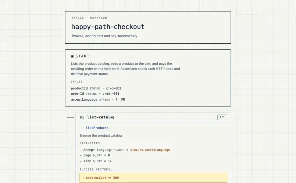
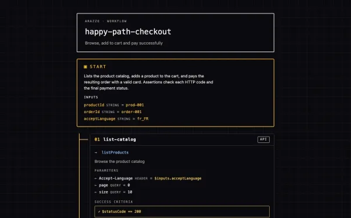
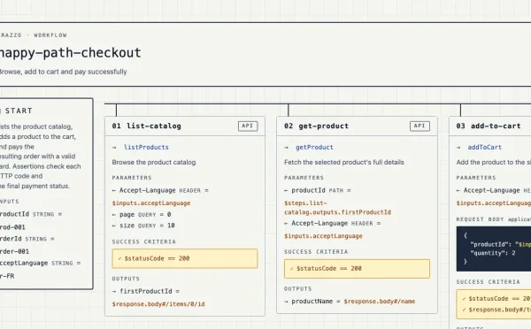

Arazzo workflows, linted, rendered, tested and load-tested.
One Go binary reads your Arazzo files and your OpenAPI contracts, then fails your CI, draws the workflow for your team, and runs it against any environment.
The back of the tapestry
examples/shop.arazzo.yaml, the four steps of happy-path-checkout, abridged to their operations and the outputs they pass on.
Each gold float is an output picked up further down: the threads the front hides, and the references lint checks one by one.
steps:
- stepId: list-catalog
operationId: listProducts
outputs:
firstProductId: $response.body#/items/0/id
- stepId: get-product
operationId: getProduct
parameters:
- name: productId
in: path
value: $steps.list-catalog.outputs.firstProductId
- stepId: add-to-cart
operationId: addToCart
outputs:
cartTotal: $response.body#/totalPrice
- stepId: pay
operationId: processPayment
outputs:
transactionId: $response.body#/transactionId
outputs:
totalSpent: $steps.add-to-cart.outputs.cartTotal
transactionId: $steps.pay.outputs.transactionId
test gen writes Hurl and k6 files you commit and review like the rest of the repo.Why
Your workflow file should not be a dead document.
Typos ship
A step calls an operationId the contract renamed last sprint. Nobody notices until the integration breaks.
Nobody reads YAML
Product, QA and support never open the file, so the workflow lives in one person's head.
Tests drift
The Postman collection and the load test were written by hand and stopped matching the workflow months ago.
CI fails first
lint resolves every reference inside the file and every operationId against the contract, reports each broken one and exits 1.
One page per workflow
view writes a page anyone can open in a browser, inputs to outputs, every expression visible.
Tests from the source
test gen writes Hurl and k6 from the workflow itself. Regenerate them in CI and they follow every change.
In action
Three renames. Three stale references. One run.
A step, an output and a retry target were renamed in shop.arazzo.yaml. The YAML is still valid and the OpenAPI contract has not changed, so a schema check sees nothing. lint follows every expression and names the three places that still use the old names, each by its YAML path.
shop.arazzo.yaml
66 value: $steps.list-catalogcatalog.outputs.firstProductId … 120 transactionId: $steps.pay.outputs.transactionIdtxId … 185 stepId: pay-refusedretry-payment
$ arazzo-maestro lint shop.arazzo.yaml [error] workflows[happy-path-checkout].outputs.transactionId: reference $steps.pay.outputs.transactionId: step "pay" does not declare output "transactionId" [error] workflows[happy-path-checkout].steps[get-product].parameters.productId: reference $steps.list-catalog.outputs.firstProductId: step "list-catalog" does not exist [error] workflows[payment-refused-path].steps[retry-payment].onFailure[retry-on-transient-failure]: target step "pay-refused" does not exist in this workflow Error: 3 issue(s) found $ arazzo-maestro lint shop.arazzo.yaml OK: shop.arazzo.yaml, no issues found
exit 0
Commands
Lint, view, test. One binary.
Linting, rendering and generating tests need nothing but the binary. Running the tests is left to Hurl and k6, two proven open source runners, rather than a home-made one.
Each command comes on its own punched card, its name in 7-bit ASCII, one column per letter: the way a Jacquard loom reads its pattern.
lint catches it before review does
Official JSON Schema first, then every expression and action target inside the file, then every step checked against the OpenAPI contract it calls.
$ arazzo-maestro lint checkout.arazzo.yaml [error] workflows[checkout].steps[create-order].operationId: operation "createOrder" not found in source "shop-api" Error: 1 issue(s) found
- SchemaThe official Arazzo JSON Schema, embedded in the binary: required fields, unknown fields, the version pattern.
workflows[0].stepz: not allowed - ReferencesEvery
$steps,$componentsand$sourceDescriptionsexpression resolved: a step that does not exist or runs later, an output a step never declares, a missing component.step "b" is not declared before this one - Flow
onSuccess,onFailureand retry targets,dependsOn, duplicateworkflowIdandstepId, fields that have no effect for the action type.target step "nowhere" does not exist in this workflow - ContractEach
operationIdandoperationPathresolved in the OpenAPI source it names, method and path included. An unqualifiedoperationIdis refused when several sources are declared.no DELETE operation on path "/products" in source "shop-api"
Every rule is always on. Errors exit 1, warnings do not, and there is no rule file to write or keep up to date.
view draws it for everyone
Standalone HTML in light, dark or pb33f themes, portrait or landscape. Or Mermaid, rendered inline by GitHub.

--theme light
--theme dark
--layout landscapetest run e2e replays it for real
Each step becomes a Hurl request and outputs become captures that feed the next step. test gen e2e writes the files to commit; test run e2e generates and runs them in one go against staging or a mock, with hurl on your PATH. Workflow inputs come in as variables.
$ arazzo-maestro test gen e2e shop.arazzo.yaml # writes dist/e2e/ $ arazzo-maestro test run e2e shop.arazzo.yaml \ --base-url https://staging.example.com/hurl/ shop/ *.hurl api/ v1 \ --variable productId=p-001 --variable orderId=ord-1 \ --variable acceptLanguage=en
happy-path-checkout.hurl
- list-catalogGET /
products 200 - get-productGET /
products/ 200{productId} - add-to-cartPOST /
cart/ 201items - payPOST /
orders/ 200{orderId}/ payment
payment-refused-path.hurl
- add-to-cartPOST /
cart/ 201items - pay-refusedPOST /
orders/ 200{orderId}/ payment
waitingrunningpassed
Executed files: 2 Executed requests: 6 Succeeded files: 2 (100.0%) Failed files: 0 (0.0%)
test gen perf puts it under load
The same chain of calls as a k6 script, with your virtual users, duration and thresholds. k6 runs it, from your laptop or your CI.
$ arazzo-maestro test gen perf shop.arazzo.yaml \ --vus 50 --duration 30s \ --threshold 'http_req_duration=p(95)<500' $ k6 run -e BASE_URL=$STAGING \ dist/perf/ k6/ shop/ happy-path-checkout.k6.js
50 virtual users, one thread each, woven as time runs down; color = the step it is on
- list-catalogGET /
products ✓ 200, 100% - get-productGET /
products/ ✓ 200, 100%{productId} - add-to-cartPOST /
cart/ ✓ 201, 100%items - payPOST /
orders/ ✓ 200, 100%{orderId}/ payment
✓ checks.........: 100.00% http_req_failed: 0.00% ✓ http_req_duration: p(95)=1.39ms, threshold p(95)<500
Excerpt of the k6 v0.57 summary, 50 VUs for 30 s against a local mock. Your API sets the real numbers.
Install
Three ways in. Same binary.
# Go 1.26 or newer $ go install github.com/emmanuelperu/ arazzo-maestro/ cmd/ arazzo-maestro@latest $ arazzo-maestro lint workflow.arazzo.yaml $ arazzo-maestro view workflow.arazzo.yaml -o dist --theme dark
Pure Go, no cgo: it builds anywhere Go does and starts instantly.
Four direct dependencies, all listed in go.mod.
# multi-arch image, amd64 and arm64 $ docker run --rm -v "$PWD":/work -w /work \ ghcr.io/emmanuelperu/ arazzo-maestro:latest \ lint workflow.arazzo.yaml
A FROM scratch image of about 20 MB: no shell, no libc, nothing but the binary. It runs lint, view and test gen; test run e2e needs hurl, which the image does not ship.
The multi-arch manifests are signed with cosign. No CA certificates inside: mount the host's (-v /etc/ssl/certs:/etc/ssl/certs:ro) before using --allow-remote. More in the Docker recipe.
# verify the archive before you run it $ cosign verify-blob \ --certificate-identity-regexp 'https://github.com/emmanuelperu/ arazzo-maestro/ .github/ workflows/ release.yml@.*' \ --certificate-oidc-issuer 'https://token.actions. githubusercontent.com' \ --bundle arazzo-maestro_0.7.0_linux_amd64.tar.gz.sig \ arazzo-maestro_0.7.0_linux_amd64.tar.gz Verified OK
Linux and macOS on amd64 and arm64, Windows on amd64.
Each archive ships with a keyless cosign signature, an SBOM and a SHA-256 checksum. Get v0.7.0.
CI
Wire it in once. Forget about it.
A broken reference fails the pull request before anyone reviews it.
.github/workflows/arazzo.ymljobs:
lint:
runs-on: ubuntu-latest
steps:
- uses: actions/checkout@v7
- uses: actions/setup-go@v7
with: { go-version: '1.26' }
- run: |
go install github.com/emmanuelperu/arazzo-maestro/cmd/arazzo-maestro@latest
arazzo-maestro lint workflows/*.arazzo.yaml
.pre-commit-config.yamlrepos:
- repo: local
hooks:
- id: arazzo-lint
name: arazzo-maestro lint
entry: arazzo-maestro lint
language: system
files: '\.arazzo\.ya?ml$'
Copy-paste versions in the recipes, including the two extra jobs that publish the rendered pages to GitHub Pages.
Specs
Under the hood.
- Arazzo
- 1.0, and 1.1 in part. Every rule is mapped in the spec compliance matrix.
- Sources
- Local OpenAPI files. HTTPS on
--allow-remote, by default 2 MiB, 5 s and 2 redirects, each adjustable; plain HTTP always refused. - lint
- Official JSON Schema, reference and flow rules inside the file, then
operationIdresolution against the contract. Every rule always on: errors exit 1, warnings do not. - view
- HTML or Mermaid. Light, dark and pb33f themes, or your own
themes.yml, contrast-audited at load. Portrait or landscape. - test e2e
- Hurl files with captures chained step to step, run against any
--base-url, with an optional HTML report. - test perf
- k6 scripts with virtual users, duration and thresholds,
BASE_URLread from the environment. - Runtime
- Go, no cgo, four direct dependencies. One self-contained binary of about 20 MB.
- Supply chain
- cosign keyless signatures, SBOM, SHA-256 checksums, OpenSSF Scorecard.
Ship workflows you can prove.
arazzo-maestro v0.7.0Apache 2.0signed with cosign, SBOM included